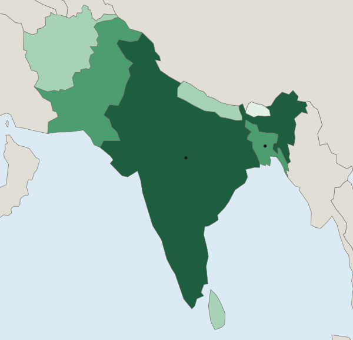

Reading Maps and Data
Read every map, table and chart in the same order: title, legend and units, source line, then the pattern.
Part 1 · Hook
Why this matters
Part 2 · See it
See it first

Part 3 · Step by step
How it works, step by step
- You read the title firstyou know what the figure measures, where and when
- You read the legend and the unitsyou know whether a shade or a number is a total, a percent or a rate per 1,000 people
- You check the source line for a maker and a yearyou know how far to trust the numbers and how old they are
- You name the places and give values when you describe the patternyour answer is specific enough to earn credit
Part 4 · Key ideas
Key ideas
- A legend (or key) says what each shade, symbol or line on a map stands for. Read it before you look at the colors.
- Check the units. A total (number of people) favors big places; a percent or a rate (per 1,000 people) lets you compare places of any size.
- A source line names who made the data and the year. "Invented data for practice" means the numbers are made up for the exercise.
- A trend is a change over time. Describe it with its direction, its dates and how much it changed.
Part 5 · Misconception
A common mistake
The wrong idea: The darkest country on a shaded map has the "most" of everything, so it is the most crowded or the most important.
What actually happens: The darkest country has the most of whatever the legend measures. If the legend counts totals, a big country like India is dark simply because it is big.
Part 6 · Check yourself
Check yourself
Exam-style questions. Anything you miss goes into your review queue.
Map
Total population of South Asian countries

Total population (number of people)
- Under 10 million
- 10 to 99 million
- 100 to 999 million
- 1 billion or more
1. Read the legend of this map. What do the shades measure?
- The total number of people in each country
- How many people live in each square kilometer
- How fast each country's population is growing
- The share of each country's people who live in cities
Show the answer
The legend title and the classes (millions, a billion) show a total: the number of people in each country.
- Correct: The total number of people in each country: Right: the legend title is "Total population (number of people)", and the classes are counts of people.
- How many people live in each square kilometer: That would be people per unit of land, a rate. The legend counts people and says nothing about land area.
- How fast each country's population is growing: Growth needs numbers from two dates. This map shows one count, from 2024.
- The share of each country's people who live in cities: A share is a percent. The classes here are counts in millions and billions, not percents.
2. Which statement describes the pattern on this map, naming places?
- Bangladesh is in the top class and India in the second class
- India is in the top class (1 billion or more) and Bhutan in the lowest (under 10 million)
- Afghanistan and Nepal are in the darkest class, and India is in the lightest class
- Sri Lanka and Pakistan are both in the lowest class
Show the answer
A good pattern statement names the places and the values: India at 1 billion or more, Bhutan under 10 million.
- Bangladesh is in the top class and India in the second class: Read the shades again: India is the darkest; Bangladesh is one class lower, with Pakistan.
- Correct: India is in the top class (1 billion or more) and Bhutan in the lowest (under 10 million): Right: it names places, their classes and the values of those classes.
- Afghanistan and Nepal are in the darkest class, and India is in the lightest class: The map has four classes in use, from Bhutan (lightest) to India (darkest).
- Sri Lanka and Pakistan are both in the lowest class: Sri Lanka is in the 10 to 99 million class and Pakistan in the 100 to 999 million class; Bhutan is the lightest.
3. A student looks at this map and writes: "India is the most crowded country in South Asia, because it is the darkest." What is wrong with the claim?
- The map has no source line, so a reader has no way to check where its numbers came from
- Dark shades on this map stand for the lowest values, so India has the fewest people shown
- It reads a totals map as a crowding map; Bangladesh fits more people on each square kilometer
- India is shaded in the lightest class, so the student read the colors in reverse
Show the answer
Totals on a shaded map favor big countries. To judge crowding you need people per unit of land, which this map does not show.
- The map has no source line, so a reader has no way to check where its numbers came from: The map does have a source line: UN World Population Prospects 2024.
- Dark shades on this map stand for the lowest values, so India has the fewest people shown: The legend runs from light (under 10 million) to dark (1 billion or more), so dark means high.
- Correct: It reads a totals map as a crowding map; Bangladesh fits more people on each square kilometer: Right: a total says nothing about how much land the people share. Bangladesh is small and very crowded (UN WPP 2024), yet it is a class lighter than India.
- India is shaded in the lightest class, so the student read the colors in reverse: India is marked on the map and shaded in the darkest class.
Data
People living in two towns, 1990 to 2020
Invented data for practice.
4. What trend does the chart show for River Town?
- It shrank in each decade, from about 50,000 people in 1990 to about 20,000 in 2020
- It stayed at about 30,000 people from 1990 to 2020, with little change
- It grew until 2000 and then shrank in each decade after that
- It grew each decade, from about 20,000 people in 1990 to about 50,000 in 2020
Show the answer
River Town's line rises from 20 to 50 (thousands of people): a rising trend over 30 years.
- It shrank in each decade, from about 50,000 people in 1990 to about 20,000 in 2020: Read the years along the bottom: 1990 is on the left, so the line rises over time.
- It stayed at about 30,000 people from 1990 to 2020, with little change: That is close to Hill Town's 1990 value, not River Town's line.
- It grew until 2000 and then shrank in each decade after that: River Town's line rises in each decade; it is Hill Town that falls after 1990.
- Correct: It grew each decade, from about 20,000 people in 1990 to about 50,000 in 2020: Right: a trend gives the direction, the dates and the size of the change.
5. Which source line is complete enough to trust for a class report?
- From the internet, found by searching for the topic
- A website about countries, with facts about each one
- UN World Population Prospects 2024, 2024 estimates
- Government numbers, recent, from the population office
Show the answer
A useful source line names who made the data and when. Without a year you cannot tell how out of date a number is.
- From the internet, found by searching for the topic: It names no maker and no year, so you cannot check it or know how old it is.
- A website about countries, with facts about each one: A website is not a named source, and there is no year.
- Correct: UN World Population Prospects 2024, 2024 estimates: Right: it names who made the data and the year of the data.
- Government numbers, recent, from the population office: "Recent" is not a year. Numbers like these change, so a year matters.
6. A table lists "Hospital beds per 1,000 people": Town P has 4 and Town Q has 2. Which statement does the table support?
- Town P has more hospital beds in total than Town Q
- Town Q has more people than Town P
- Town Q has 2 hospital beds, half as many as Town P has
- Town P has more beds for each 1,000 people than Town Q
Show the answer
Read the unit in the header. "Per 1,000 people" is a rate, so it compares how well each town is served, not how many beds each has.
- Town P has more hospital beds in total than Town Q: A rate does not give a total. If Town Q has many more people, it could have as many beds or more.
- Town Q has more people than Town P: The table gives no populations, so you cannot tell which town is bigger.
- Town Q has 2 hospital beds, half as many as Town P has: The 2 is a rate, 2 beds for each 1,000 people, not a count of beds.
- Correct: Town P has more beds for each 1,000 people than Town Q: Right: the unit is a rate, beds for each 1,000 people, and 4 is more than 2.
Part 7 · Summary
Summary
Part 8 · Up next
What comes next
Part 9 · Connections